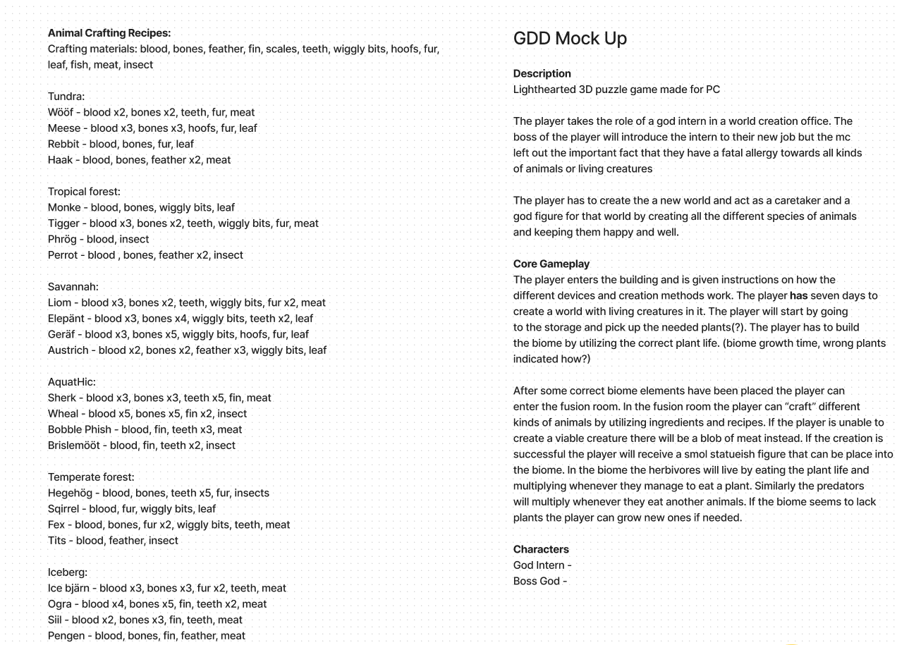
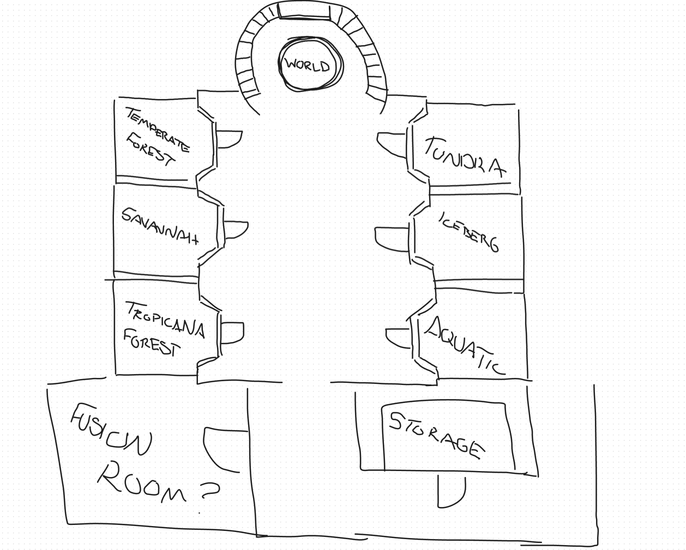
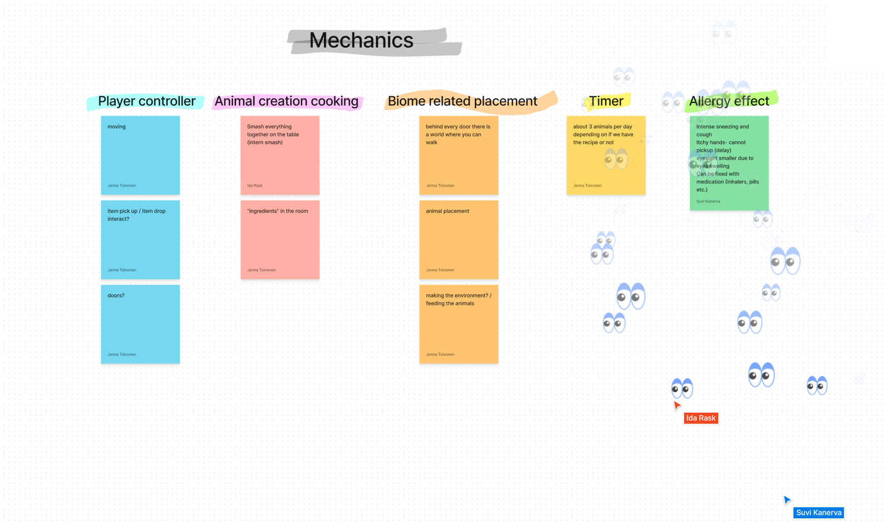
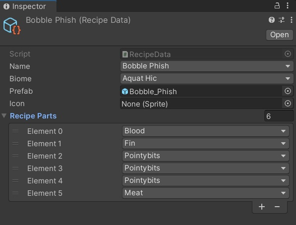

Godllergy
1. Project Description
We had an in-house 48 hour jam with members of Studio Crying Spider. The randomized primary theme was allergy with secondary themes of blood and god.
I was still relatively inexperienced at this point, and a year later looking at the code I feel the amount of code I produced is relatively little. But that is learning I guess.
Client: This was for ourselves. We wanted to have fun.
Team and Roles:
Jenna Toivonen - 3d artist
Christopher Solis - 3d artist
Suvi Kanerva - 3d artist
Ida Rask - programmer
Toni Tiilikainen - programmer
Design: We used the first 4-ish hours to come up with the game. It is about a god intern, who is allergic to living things. The design was reached by all of us refining ideas on a canva board (or similar online canvas program). A better look at the GDD can be found in the Screenshots section below.
Achieved: We managed to create the main functionalities of the game. These included character controller, crafting, moving animals, play area, and inventory.
Future: Like many jam projects, this would be fun to continue, but it is difficult to get students to work on a side project while they are busy with school.
Schedule: 48 hours and whatever was left unfinished was left unfinished most likely forever.
2. My Tasks
Design: All of us did the designing as a group. It all worked very smoothly.
Crafting: I was tasked to build a cauldron, which would create different animals/plants based on what was dropped inside it.
Inventory: I built a rudimentary inventory, where you could store an item or an animal, transport it, and place it in a desired location.
Prefabs and recipes: I built the prefabs and recipes in the editor. What the recipes included and created, was a group effort. There were a total of 25 animal recipes.
Character controller: I did some fiddling with it, but the base was the standard Unity character controller.
3. Problems and Solutions
Model scales and rotations: Having 3 different 3d artists caused the models to be in 3 different formats, which forced me to adjust each of the prefabs by hand to keep their behavior uniform in the project. It taught me to tell artists to submit in uniform format. XD
Dictionaries in Lists: This wasn't really a problem, but it felt pretty good to get the lists of recipes to work with the crafting on the first try. :D
4. Testing
There was no testing other than basic "does it still work".
5. Screenshots
Picture 1. The GDD.

Picture 2. The original map design.

Picture 3. Game mechanics as in original design.

Picture 4. How the recipes look in Unity editor.

6. A Scene Walkthrough Video
This only shows the crafting scripts and the main game scene.
7. Conclusions
This is another game that could be very interesting as a small hyper casual game, if finished. I am kind of hoping we come back to it at some point. However, I'm not holding my breath.